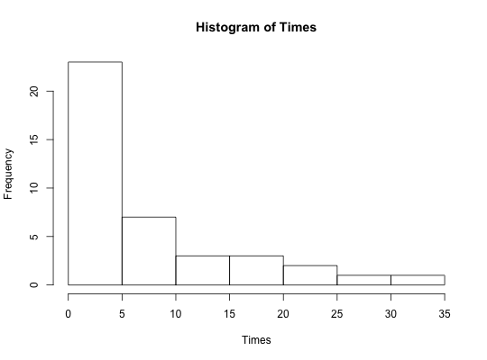

The times recorded are those for 41 successive vehicles travelling
northwards along the M1 motorway in England when passing a fixed point near
Junction 13 in Bedfordshire on Saturday, March 23, 1985. After subtracting
the times, the following 40 interarrival times reported to the nearest
second are stored in SDS4 under the variable Times. Data are
used in Example 10.17.
A data frame with 40 observations on the following variable:
Hand, D. J., et. al. (1994) A Handbook of Small Data Sets. Chapman & Hall, London.
Ugarte, M. D., Militino, A. F., and Arnholt, A. T. (2008) Probability and Statistics with R. Chapman & Hall/CRC.
with(data = SDS4, hist(Times))